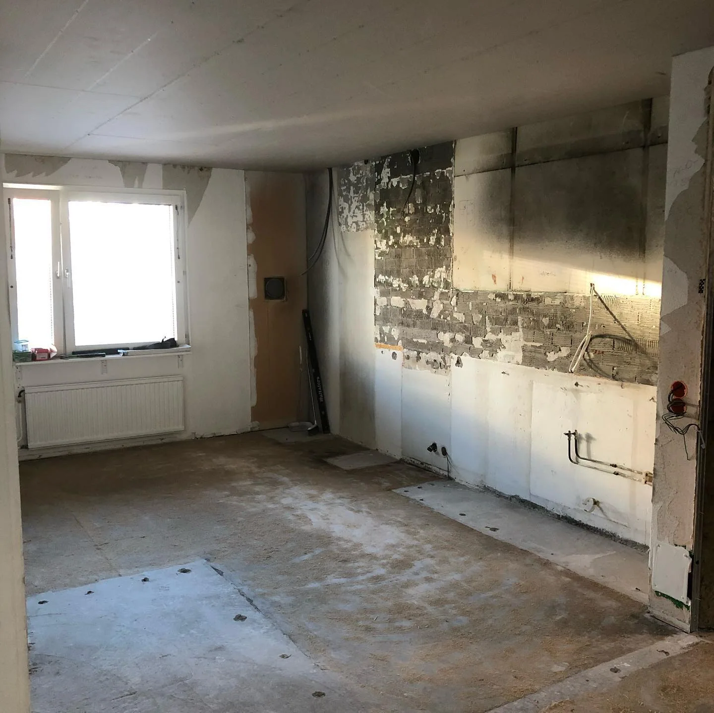

Renovering med helheten på plats.
Från förändrad planlösning till ett färdigt kök. Vi renoverar hus, lägenheter och lokaler i Skåne.

Från planering till färdigställande.
En renovering innehåller ofta flera olika arbeten. Vi samordnar rivning, bygg, el och VVS tillsammans med våra samarbetspartner så att delarna hänger ihop.
Utgå från det som finns.
Vi går igenom vad du vill förändra och vilka förutsättningar huset eller lokalen har. Därefter planeras arbetet och du får en kostnadsfri offert.
- Totalrenovering av hus och lägenheter
- Köks- och badrumsrenovering
- Ändrad planlösning och ombyggnad
- Renovering av kommersiella lokaler
Bilder från våra arbeten.


Kök under renovering
Renovering

Kök med gröna skåpluckor och arbetsbänk.
Renovering